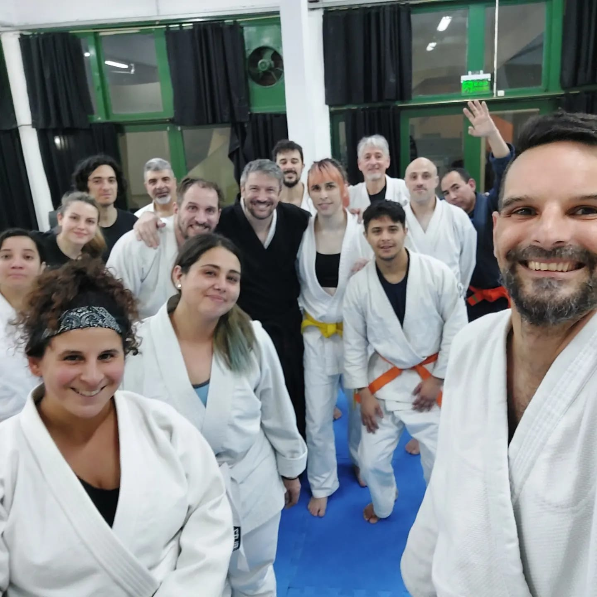

Sede Caballito
Sensei Richard Robinson, Sandan (3.er dan)
General Manuel A. Rodríguez 1191, Caballito, Capital Federal- Lun19:00a 20:30
- Mar·
- Mié18:30a 20:00
- Jue·
- Vie19:00a 20:30
Jiu Jitsu significa, literalmente, el arte de la flexibilidad y la suavidad.
Enseñamos una forma de defensa personal muy efectiva para hombres y mujeres, sin la necesidad de utilizar mucha fuerza.
Hora de Buenos Aires
Podés entrenar en Capital, en zona oeste o en las dos sedes. Todas las clases duran una hora y media.
Sensei Richard Robinson, Sandan (3.er dan)
General Manuel A. Rodríguez 1191, Caballito, Capital Federal
Sensei José María Vaquer, Shodan (1.er dan)
Gabriel Ardoino 430, Ramos Mejía, Buenos AiresNo es un sistema que se base en la fuerza física y por lo tanto es adecuado para personas de muy diferentes estaturas. Incorpora bloqueos, golpes, lances y retenciones, así como sus contraataques.
Jiu Jitsu permite una respuesta muy a la medida de la situación, en lugar de una respuesta todo o nada, lo que podría meterte en problemas con la ley.
Todos los Sensei dan su tiempo libremente, como sus respectivos Sensei hicieron por ellos. El arancel cubre los gastos del dojo, del club y de la organización. Leé sobre On y Giri
Empezás en 8° kyu. Para pasar de un grado al próximo se necesita completar un examen. Al llegar a 1° kyu se puede enseñar Shorinji Kan Jiu Jitsu.
Tocá un cinturón para ver qué se aprende en ese grado.
Principiante, cuando empiezas hacer Jiu Jitsu tienes el grado 8° Kyu.
Todavía sin lances: se empieza por las caídas

Una organización de artes marciales progresiva que enseña un estilo de Jiu Jitsu mundialmente conocido como Shorinji Kan. Tiene clubes en 14 países.
Argentina, Australia, Canadá, Dinamarca, Escocia, España, Estados Unidos, Gales, Inglaterra, Islas Vírgenes Británicas, Japón, Kenia, Sudáfrica y Nueva Zelanda.
No. No es un sistema que se base en la fuerza física y por lo tanto es adecuado para personas de muy diferentes estaturas.
No es el objetivo. Las aplicaciones deportivas permiten practicar contra alguien que resiste, pero el objetivo primordial de quienes practican Jiu Jitsu no es ganar combates deportivos entre ellos. Nuestro estilo se clasifica como un sistema de Budo: defensa personal y también superación personal.
Bloqueos, golpes, lances y retenciones, así como sus contraataques, para defenderse de una amplia variedad de ataques: desde un agarre de muñeca hasta un palo o un cuchillo.
Sí. Muchos principiantes empiezan como una forma de defensa personal y otros provienen de otras artes marciales y quieren ver en qué consiste nuestro estilo.
Los gastos de funcionamiento del dojo, del club y de la organización, y los gastos del Sensei para llegar al dojo y viajar a eventos. La instrucción no se paga: todos los Sensei dan su tiempo libremente.
Con un examen. Hay ocho grados Kyu, del cinturón blanco al marrón. En los dos primeros exámenes se puede aprobar con 0, 1, 2 o 3 mons; desde el 5° kyu solo se aprueba o no.
Muchos principiantes empiezan para aprender defensa personal; otros vienen de otras artes marciales. Sea cual sea tu razón, escribinos y te esperamos en el tatami.